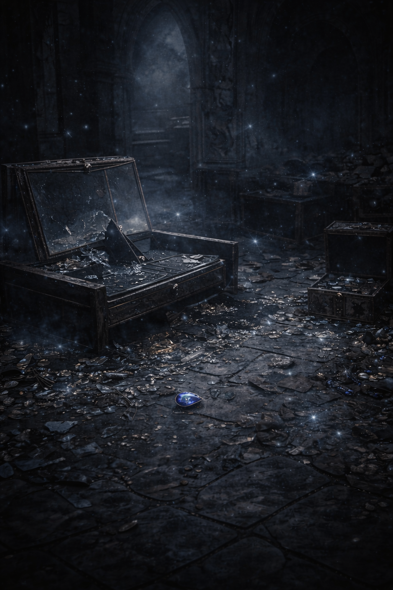

Lunaris Jewel Heist

- Location:
Lunaris Royal Exhibition Hall - Time:
03:03 AM - Witnesses:
Three guards (disorientation reported)
STOLEN OBJECT
A fractured gemstone fragment embedded within a ceremonial crown. Previously cataloged as decorative damage with no restoration value.
INCIDENT SUMMARY
At approximately 03:03 local time, security personnel reported a synchronized disorientation event lasting 10 seconds. Unlike prior incidents, partial system functionality remained active. Footage reveals a distortion field moving with intent toward a restricted display. The subject bypassed multiple high-value artifacts, removing only the damaged gemstone fragment. Notably, a secondary anomaly was detected: An unidentified heat signature appeared briefly in an adjacent corridor, then vanished.
KEY EVIDENCE
- Strongest arcane resonance recorded to date across all related cases
- Residual signature shows interference pattern (non-Lyra origin)
- Trace thermal distortion inconsistent with illusion magic
INVESTIGATOR NOTES
- First confirmed indication of external interference during operation
- Subject deviated from optimal extraction route
- Movement patterns suggest urgency rather than precision